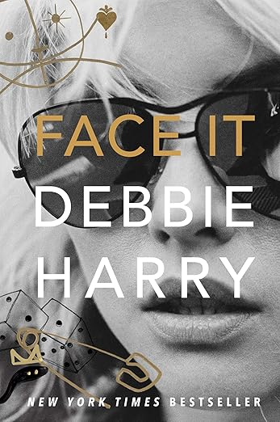
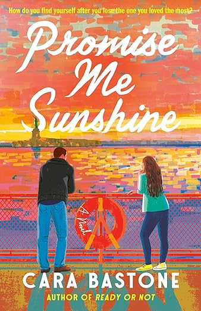
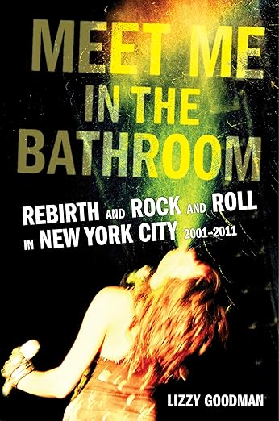

Books
Here are the books I’ve read for pleasure thus far in 2026 (as of March 23) accompanied by some reflections – not reviews or criticisms, just reflections.
Face It
By Debbie Harry

I tend to listen to nonfiction books. Less immersive than well-executed fiction, audio nonfiction, in my opinion, pairs well with being out-and-about. Debbie Harry (of Blondie fame)’s self-narrated memoir was no exception. Navigating Manhattan while listening to her describe pre-gentrification Lower East Side is an amazing experience.
Dickens’ words come to mind when she describes the early punk scene: “It was the best of times, it was the worst of times.” She was sexually assaulted, held at gunpoint, and stalked with disturbing frequency, and yet recalls these stories matter-of -factly, with nary a hint of trauma in her voice. In the age of trauma-mining, this contrast was… refreshing to me?? Predictably, this was not the consensus amongst reviewers on GoodReads (on which the book has 3.62 stars) with the top- liked review calling it “Interesting, but lackluster.” Despite all this, the tone of the book is set by an outpouring of appreciation for her fans, love for her contemporaries, and an overall sense of contentment for how things played out.
Overall, I loved this book. I love Blondie, I love Debbie’s Jersey accent, and I love that she told the stories she wanted to tell and kept others close to her chest.
Promise Me Sunshine
Cara Bastone

Promise Me Sunshine was a very enjoyable take on a classic friends-to-lovers romantic trope and the perfect choice for my spring break binge-read. I see a lot of discourse on grief these days (shout out Anderson Cooper), and, without coming across insensitive or reductive, Bastone adeptly wrote a slow burn love story within a story of loss. Promise Me Sunshine (unfortunate name and even worse cover art, can the romance publishing industry work on that please?) is a fun beach read, and the added love-after-loss layer sets it apart in an oversaturated genre.
Meet Me in the Bathroom: Rebirth and Rock and Roll in New York City 2001-2011
Lizzy Goodman

Once again, a great audio book to listen to as the backdrop to exploring NYC. While the content was very amusing, the narration left something to be desired. This book is one massive ego-trip for The Strokes, but perhaps the hype is deserved, and I did enjoy all 19+ hours of it. Goodman effectively evoked in me a feeling of nostalgia, or perhaps it was jealousy, for a scene I didn’t witness (as I was busy being an infant).
Though The Strokes were the main players here, I may have enjoyed hearing from Karen O and the Yeah Yeah Yeahs more than Julian, Fab, Nick, Albert, and Nikolai.
A Room with a View
E.M. Forster

Some of the most beautiful prose I’ve read. Rich character development in so few pages and a romance that is carried through the writing rather than the plot. Unlike anything I’ve read before.
The Metamorphosis
Franz Kafka

Honestly, I fear this book may have been ruined by its own cultural impact.
Evelina: or The History of a Young Lady's Entrance into the World
Frances Burney
Perhaps Frances Burney could have benefited from a decisive editor, or perhaps the messiness of this drama lives in its length. Contingent on Evelina’s obligation to relay her every thought and experience to her adoptive father, the epistolary art has certainly improved since publication, however I actually enjoyed the tediousness of this structure though it does come across a bit forced. A wonderful and satirical novel of manners.
The Library of Unruly Treasures
Jeanne Birdsall

My friend, the other Jane, said it best: “a modern Matilda.” This book is warm, cozy, and perfect! Jeanne Birdsall’s familiar writing is so healing to me, I was thrilled to see her try out a fantasy novel, and it did not disappoint.
The Mystery Guest
Nita Prose

Unfortunately, this sequel fell a bit flat. I enjoyed The Maid, and the characters remain charming, but the whole story felt forced.
The Art of Gathering: How We Meet and Why It Matters
Priya Parker

A little indulgent and kooky, but I found this book entertaining and thought-provoking as someone who had a short career in nonprofit convening. I rolled my eyes at some of her more ridiculous stories, but enjoyed learning about gathering traditions of various cultures. It’s a worthy topic to ponder.